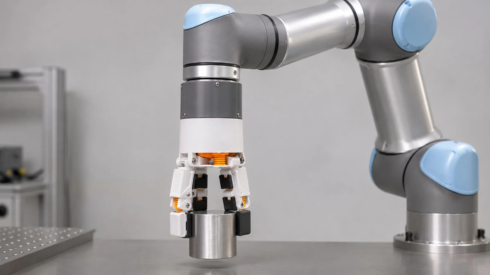

● En el UR5e
Se monta en la brida del robot.
La energía y los datos salen del conector de herramienta: no necesita cables externos.
● Interfaz con el UR5e
Se monta en la brida del robot.
El acople impreso sigue la brida de herramienta del UR5e. La energía y los datos salen del conector de herramienta, así que el gripper no necesita cables externos.

| Parámetro del UR5e | Valor | Uso en el gripper |
|---|---|---|
| Carga útil | 5 kg | Límite de masa de gripper más pieza. |
| Brida de herramienta | EN ISO 9409-1-50-4-M6 | Acople UR5e impreso con tornillos M6. |
| Alimentación de herramienta | 12 / 24 V · 1,5 A (dos pines) · 1 A (un pin) | Única fuente: 24 V a la PCB1. |
| Conector | M8 de 8 pines | Energía y enlace RS-485 por el mismo cable. |
| Alcance · repetibilidad | 850 mm · ± 0,03 mm | Espacio de trabajo del agarre. |
Fuente: Universal Robots, UR5e Technical Specification (2023).